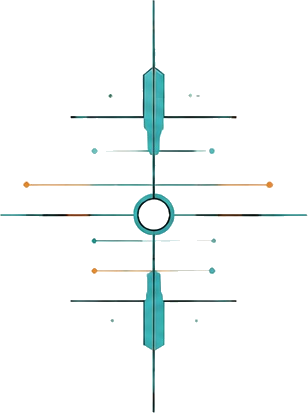
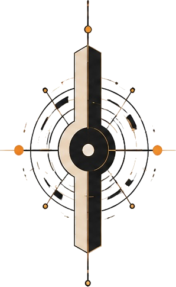

00 Independent software studio
The world moves.
The reference remains.
We build thoughtful, adaptable software by returning to first principles—then combining the tools already here in ways that weren’t obvious before.
INTELLIGENCEBEGINS AT ZERO
01 / Position
Not another layer of noise.
Not technology for its own sake.
A clear frame for what comes next.
Zero State is the willingness to return to first principles as conditions change. We preserve what remains true, discard what no longer serves, and build from there.
02 / Identity system
One state.
Four expressions.
A visual language of centers, orbits, axes, and emergence—each mark holding a different tension inside the same system.



03 / Selected evidence
Systems in motion.
Products are not claims. They are evidence of the method under pressure.
04 / Operating principles
See clearly.
Build deliberately.
- 01Creativity
Perceives possibility and gives it form.
- 02Curiosity
Finds what inherited assumptions cannot explain.
- 03Authenticity
Keeps perception, judgment, expression, and action coherent.
05 / The threshold
Return to zero.
Begin again.
Start a conversation ↗
The tools are already here.